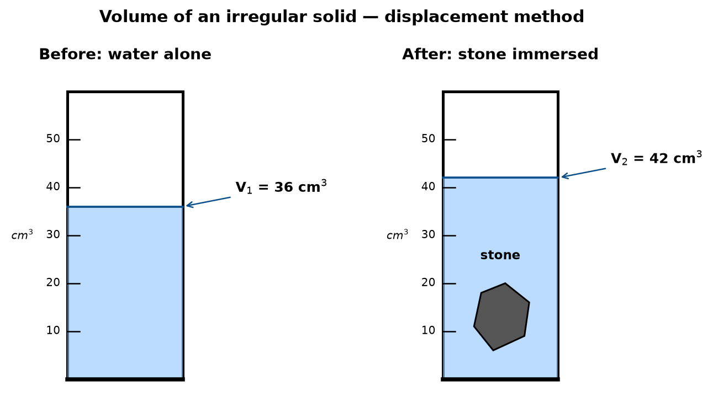
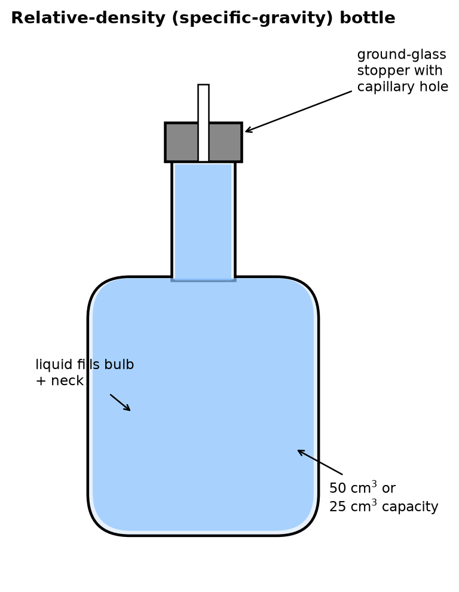

Density & Relative Density — Lesson 1
What is density? Measuring it. Relative
density.
Greenoak International School · Grade 10 Physics
Think first
- A stone the size of an orange —
will it sink or float in water?
- A log of wood the size of a car —
will it sink or float?
- Both answers depend on one
property of the material.
- That property is density.
Density — definition
- Density is the mass per
unit volume of a substance.
- In symbols: \[\rho =
\dfrac{m}{V}\]
- \(\rho\) (rho) — density
- \(m\) — mass of the sample
- \(V\) — volume of the sample
Density — SI units
- The SI unit of density is
kilogram per cubic metre: \[\text{kg m}^{-3} \quad\text{or}\quad
\text{kg/m}^3\]
- A common lab unit is gram
per cubic centimetre: \[\text{g
cm}^{-3} \quad\text{or}\quad \text{g/cm}^3\]
- Both measure the same quantity. We must be able to
convert.
Converting the units
- Start from one reference you must memorise: \[1\ \text{g cm}^{-3} = 1000\ \text{kg
m}^{-3}\]
- So water at 4 °C: \[\rho_\text{water} = 1.0\ \text{g cm}^{-3} = 1000\
\text{kg m}^{-3}\]
- To go g/cm³ → kg/m³: multiply by
1000.
- To go kg/m³ → g/cm³: divide by
1000.
Densities to remember
| Substance |
Density (kg m⁻³) |
| Air (room temp.) |
1.3 |
| Wood (pine, average) |
500 |
| Ice |
920 |
| Water (4 °C) |
1000 |
| Aluminium |
2700 |
| Iron / steel |
7800 |
| Copper |
8900 |
| Lead |
11 300 |
| Mercury |
13 600 |
| Gold |
19 300 |
Worked Example 1 — ethanol
A bottle contains 190 g of ethanol. The volume of
the ethanol is 240 cm³. Calculate the density of
ethanol.
- List what we have. \(m = 190\ \text{g},\ V = 240\
\text{cm}^3\).
- Write the formula. \[\rho = \dfrac{m}{V}\]
- Substitute. \[\rho = \dfrac{190\ \text{g}}{240\
\text{cm}^3}\]
- Compute. \[\rho = 0.79\ \text{g cm}^{-3}\]
- Convert to SI. \[\rho = 0.79 \times 1000 = 790\ \text{kg
m}^{-3}\]
Common mistake — units
- Students write: \(\rho =
0.79\ \text{g/cm}^3 = 0.79\ \text{kg/m}^3\).
Wrong.
- The numerical value changes when the unit
changes.
- Always state the unit with the
number. A density without a unit is a wrong answer.
Measuring density — the plan
- To find density of any sample, we need two
measurements:
- Its mass \(m\) — on a balance.
- Its volume \(V\) — by a method that depends on the
shape.
- Then compute \(\rho =
m/V\).
Measuring volume — regular solid
- A cuboid: measure length \(\ell\), breadth \(b\), height \(h\) with a ruler. \[V = \ell \times b \times h\]
- A cylinder: measure diameter \(d\) and height \(h\) with vernier callipers or a ruler.
\[V = \pi r^2 h, \quad r = d/2\]
- A sphere: measure diameter \(d\). \[V =
\tfrac{4}{3}\pi r^3\]
Measuring volume — irregular solid
Use the displacement method:
- Pour water into a measuring cylinder. Read the
volume: \(V_1\).
- Lower the stone in gently — fully submerged, no air
bubbles.
- Read the new volume: \(V_2\).
- Volume of the stone: \[V_\text{stone} = V_2 - V_1\]
Displacement — the apparatus

Measuring volume — liquid
- Pour the liquid into a measuring cylinder.
- Read the level at the bottom of the
meniscus (eye level, no parallax).
- The reading, in cm³, is the volume.
- For small volumes (≤ 25 cm³), a
pipette or burette gives higher
precision.
Worked Example 2 — stone
A stone has mass 75 g. When placed in a measuring
cylinder containing 40 cm³ of water, the water level
rises to 65 cm³. Calculate the density of the
stone.
- Volume of stone (by displacement):
\[V = 65 - 40 = 25\ \text{cm}^3\]
- Density. \[\rho = \dfrac{m}{V} = \dfrac{75}{25} = 3.0\
\text{g cm}^{-3}\]
- In SI units: \[\rho = 3000\ \text{kg m}^{-3}\]
Relative density — why?
- Writing “density of mercury = 13 600 kg m⁻³” is
cumbersome.
- Often we only want to know: how many times
denser than water?
- That ratio is the relative
density.
Relative density — definition
- The relative density of a
substance is the ratio of its density to the density of water at
4 °C. \[\text{RD} =
\dfrac{\rho_\text{substance}}{\rho_\text{water}}\]
- Because it is a ratio of two densities, RD
has no units.
- Also called specific gravity.
Example numbers
- Mercury: \(\rho =
13\,600\ \text{kg m}^{-3}\) → \(\text{RD} = 13.6\).
- Aluminium: \(\rho =
2700\) → \(\text{RD} =
2.7\).
- Ice: \(\rho =
920\) → \(\text{RD} = 0.92\)
(less than 1 — ice floats).
- Rule: RD < 1 → floats on water.
RD > 1 → sinks in water.
The density bottle

- A small glass bottle with a ground-glass
stopper.
- The stopper has a fine capillary
hole drilled through it.
- When filled and the stopper is pushed in,
excess liquid escapes through the hole, leaving a
fixed volume every time.
RD by density bottle — the four readings
To find RD of a liquid, record:
- \(m_1\) = mass of
empty bottle + stopper.
- \(m_2\) = mass of
bottle + water, filled.
- \(m_3\) = mass of
bottle + liquid, filled.
- Then the masses of equal volumes are: \[m_\text{water} = m_2 - m_1, \quad m_\text{liquid}
= m_3 - m_1\]
Worked Example 3 — density bottle
An empty density bottle has mass 20 g. When filled
with water its mass is 80 g. When filled with a liquid
its mass is 100 g. Find the relative density of the
liquid.
- \(m_1 = 20\ \text{g},\
m_2 = 80\ \text{g},\ m_3 = 100\ \text{g}\).
- Mass of water in bottle: \(m_2 - m_1 = 80 - 20 = 60\ \text{g}\).
- Mass of liquid in bottle: \(m_3 - m_1 = 100 - 20 = 80\ \text{g}\).
- Relative density. \[\text{RD} = \dfrac{80}{60} = 1.33\]
- No unit — because it is a ratio.
Common mistake — forget to subtract
- Students write: \(\text{RD} = 100 / 80 = 1.25\).
Wrong.
- That uses the total bottle mass,
not the mass of the liquid.
- Always subtract the empty-bottle mass
first.
Common mistake — RD with units
- Relative density is a pure
number.
- Writing \(\text{RD} =
1.33\ \text{g cm}^{-3}\) loses the mark.
- Correct form: \(\text{RD}
= 1.33\) (no unit).
Density vs Relative Density
| Property |
Density (\(\rho\)) |
Relative density (RD) |
| Symbol |
\(\rho\) |
RD or \(d\) |
| Formula |
\(m / V\) |
\(\rho_\text{sub} /
\rho_\text{water}\) |
| Units |
kg m⁻³ or g cm⁻³ |
none (ratio) |
| Example (mercury) |
13 600 kg m⁻³ |
13.6 |
Link to density
- If you know RD, you can get density: \[\rho = \text{RD} \times
\rho_\text{water}\]
- Using water = 1000 kg m⁻³: \[\rho = \text{RD} \times 1000\ \text{kg
m}^{-3}\]
- Example: a liquid of RD 0.80 has density \(0.80 \times 1000 = 800\ \text{kg
m}^{-3}\).
Class task
Copy each into your exercise book, show working, give units.
- A block of wood measures 20 cm × 10 cm × 5 cm and has mass 600 g.
Calculate (a) its density in g cm⁻³ and (b) its density in kg m⁻³.
- 250 cm³ of a liquid has mass 320 g. Find the relative density of the
liquid.
- An empty density bottle has mass 25 g. Filled with water it is 75 g;
filled with olive oil it is 71 g. Find the RD of olive oil.
- The density of petrol is 720 kg m⁻³. State the relative density of
petrol.
Homework
Bring written answers to Lesson 2.
- (WAEC 2016.) An object of mass 120 g
displaces 40 cm³ of water when fully immersed.
Calculate the density of the object.
- (WAEC 2008.) A piece of metal of mass 100 g has volume 20
cm³. What is its density in kg m⁻³?
- (JAMB 1995, adapted.) A density bottle of mass 28
g weighs 78 g when filled with water and
90 g when filled with a liquid X. Calculate the
relative density of X.
- (IGCSE 0625 J22 P2 Q1a.) Define density and state its SI
unit.
- State, with a reason, which would have the greater mass: 1 m³ of
aluminium (ρ = 2700 kg m⁻³) or 1 m³ of iron (ρ = 7800 kg m⁻³).
What we learned today
- Density is mass per unit volume,
\(\rho = m/V\).
- SI unit: kg m⁻³. Lab unit: g cm⁻³.
1 g cm⁻³ = 1000 kg m⁻³.
- Volume: formula (regular),
displacement (irregular), cylinder (liquid).
- Relative density = \(\rho/\rho_\text{water}\) — no
unit.
- Density bottle: \(\text{RD} = (m_3 - m_1)/(m_2 - m_1)\).
- RD < 1 → floats; RD > 1 → sinks.